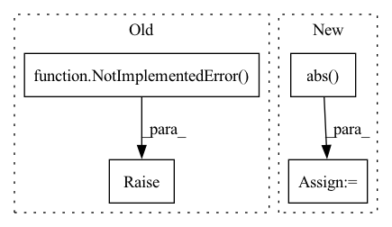

Pattern ID :741

Before Change
raise NotImplementedError("Not Implemented.")
def dice_coe(output, target, loss_type="jaccard", axis=(1, 2, 3), smooth=1e-5):
Soft dice (Sørensen or Jaccard) coefficient for comparing the similarity
After Change
if reduction == "mean":
loss = torch.mean(torch.abs(output - target))
elif reduction == "sum":
loss = torch.sum(torch.abs(output - target))
elif reduction == "none":
loss = torch.abs(output - target)
else:
In pattern: SUPERPATTERN
Frequency: 3
Non-data size: 4
Instances
Fragment ID: 3616388
Project Name: tensorlayer/tensorlayerx
Commit Name: 21bf2328ccadff5a24520c774d17bfd6d5e05fa4
Time: 2022-01-26
Author: laicheng_vip@163.com
File Name: tensorlayerx/losses/torch_cost.py
M Class Name: AnonimousClass
N Class Name: AnonimousClass
M Method Name: absolute_difference_error(3)
N Method Name: absolute_difference_error(5)
M Parent Class:
N Parent Class:
M File Name: tensorlayerx/losses/torch_cost.py
N File Name: tensorlayerx/losses/torch_cost.py
M Start Line: 141
M End Line: 161
N Start Line: 146
N End Line: 154
'>
Before Change
if not matrix:
return torch.pairwise_distance(x, y, p=1)
raise NotImplementedError()
@staticmethod
def cosine_distance(x: Tensor, y: Tensor = None, matrix=False) -> Tensor:
Compute cosine distance
After Change
// expand dimensions to calculate element-wise diffrences with broadcasting
// shape: (batch_size, batch_size, vector_dim)
deltas = x.unsqueeze(1) - y.unsqueeze(0)
abs_deltas = torch.abs(deltas)
// sum across the last dimension for reduction
// shape: (batch_size, batch_size)
distances = abs_deltas.sum(dim=-1)
'>
Fragment ID: 3616385
Project Name: qdrant/quaterion
Commit Name: 032343e6e07e8e226b303d334d52acdab37106d9
Time: 2022-03-14
Author: yusufsarigoz@gmail.com
File Name: quaterion/loss/metrics.py
M Class Name: SiameseDistanceMetric
N Class Name: SiameseDistanceMetric
M Method Name: manhattan(3)
N Method Name: manhattan(3)
M Parent Class:
N Parent Class:
M File Name: quaterion/loss/metrics.py
N File Name: quaterion/loss/metrics.py
M Start Line: 61
M End Line: 73
N Start Line: 61
N End Line: 93
'>
Before Change
Returns:
mask <torch.Tensor>: Tensor with shape of (n_sources, n_bins, n_frames) or (batch_size, n_sources, n_bins, n_frames)
raise NotImplementedError("No implementation")
def multichannel_wiener_filter(mixture, estimated_sources_amplitude, iteration=1, channels_first=True, eps=EPS):
Multichannel Wiener filter.
After Change
angle_mixture, angle_input = torch.angle(mixture), torch.angle(input)
angle = angle_mixture - angle_input
mask = (torch.abs(input) / (torch.abs(mixture) + eps)) * torch.cos(angle)
return mask
'>
Fragment ID: 3616381
Project Name: tky823/dnn-based_source_separation
Commit Name: c3c7a93c8f9c9a8328fda81c1aa3981a2a84dabb
Time: 2021-09-06
Author: 40362510+tky823@users.noreply.github.com
File Name: src/algorithm/frequency_mask.py
M Class Name: AnonimousClass
N Class Name: AnonimousClass
M Method Name: phase_sensitive_mask(2)
N Method Name: phase_sensitive_mask(2)
M Parent Class:
N Parent Class:
M File Name: src/algorithm/frequency_mask.py
N File Name: src/algorithm/frequency_mask.py
M Start Line: 98
M End Line: 98
N Start Line: 118
N End Line: 132